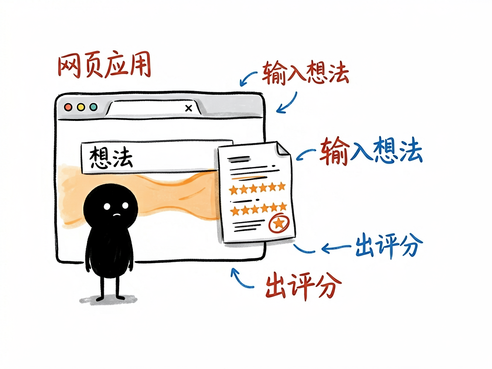

那个最早的小红书生意验证器原版 —— XHS_Business_Idea_Validator 介绍
你有个生意点子，比如"在深圳卖陈皮"，想知道小红书上的人买不买账。前面那篇 xhs-business-validator 其实是从一个更早的"原版"项目改出来的技能版。这个 XHS_Business_Idea_Validator 就是那个原版——一个独立的小红书商业创意验证器。
XHS_Business_Idea_Validator 就是来解决这件事的。
你给它一个生意想法，它去小红书里搜相关笔记和评论，分析用户痛点和市场信号，最后给你一份带评分的验证报告，告诉你这个点子值不值得做。

它到底能做什么
- 搜小红书笔记和评论：围绕你的想法，拉取相关的笔记内容和用户评论。
- 分析用户痛点：从大家的讨论里提炼真实需求、抱怨和没被满足的空档。
- 给市场信号打分：综合讨论热度、反馈和竞争情况，打出 0–100 的评估分。
- 生成验证报告：输出关键痛点、现有解决方案、市场机会和行动建议。
- 支持不同模式：轻量快速看和较完整的深度分析两套节奏可选。
一个具体例子
它的同门技能版（xhs-business-validator）在对话里这么用：
帮我验证一下在深圳卖陈皮这个想法
本原版作为"web 应用"形态，思路一致：输入想法 → 拉取小红书数据 → AI 分析 → 出评分和报告。不过具体入口和命令以原项目（github.com/liangdabiao/XHS_Business_Idea_Validator）为准。
谁适合用
- 想在国内（小红书受众）试水小生意的人：先验证需求再投入。
- 做选品、账号定位、内容创作的人：看品类声量和真实痛点。
- 品牌方：快速摸清楚某个方向在小红书上的反馈。
一点说明 / 小提示
本批次里这个目录是空的，拿不到它自己的 SKILL.md / README，所以上面内容是根据同仓库的 xhs-business-validator 和 README 中指向的原版链接（github.com/liangdabiao/XHS_Business_Idea_Validator，标注为"web 应用原版"）推断的，具体能力以项目原文档为准。两者高度同源：XHS_Business_Idea_Validator 是更早的网页应用原版，而 xhs-business-validator 是把同一套思路做成、能直接在 AI 助手对话里调用的"技能版"。注意它只覆盖小红书这一个平台的数据，评分是方向性判断，不代表真实成交结果。